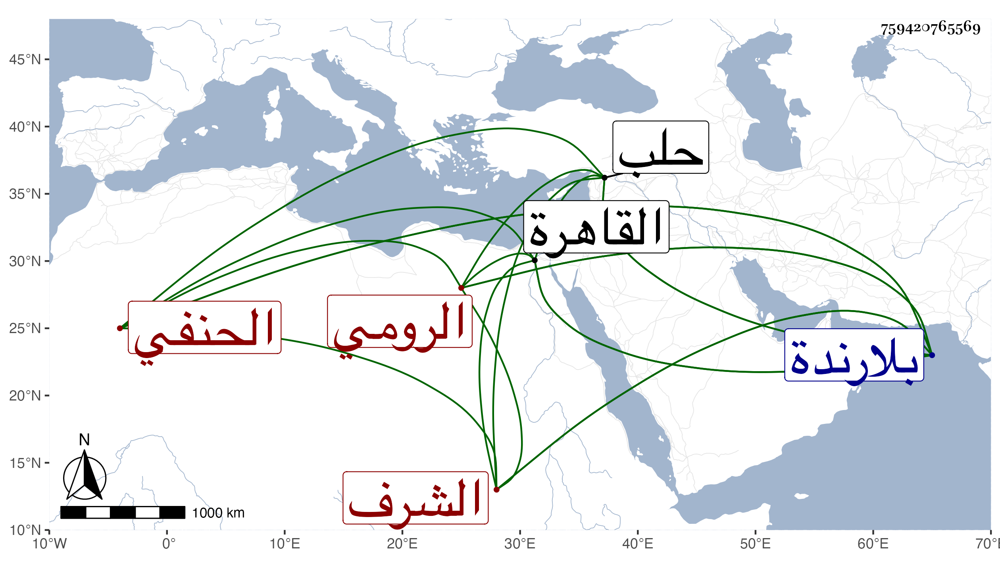

0902Sakhawi.DawLamic.ITO20230111-ara1.EIS1600.759420765569
Biography ID: 759420765569
1108
يعقوب بن إدريس بن عبد الله بن يعقوب الشرف الرومي النكدي نسبة لنكدة من بلاد ابن قرمان الرومي الحنفي ويعرف بقرا يعقوب . ولد في سنة تسع وثمانين وسبعمائة واشتغل في بلاده على الشمس الفناري وسمع البخاري على الشمس الهروي وجد في الطلب حتى فضل ومهر في الأصول والعربية والمعاني ، وحج وهو شاب في سنة تسع عشرة ، ودخل حلب فاجتمع به ابن خطيب الناصرية ووصفه بالفضيلة والعلم والذكاء وأنه عالم البلاد القرمانية ، ودخل القاهرة بعد ذلك فيقال أن الأمير ططر أعطاه ألف دينار ، وحصل كتبا كثيرة وكان مقيما بلارندة من بلاد ابن قرمان يدرس ويفتي بل كتب على المصابيح شرحا يقال أنه وصل فيه إلى النصف وكذا قيل أنه كتب على الهداية وأن له حواشي على البيضاوي . مات في ربيع الأول سنة ثلاث وثلاثين بلارندة عن نحو أربع وأربعين سنة ، وذكره شيخنا في إنبائه باختصار .
